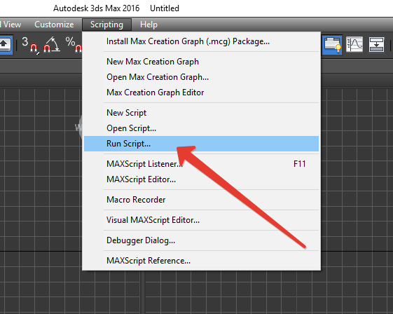
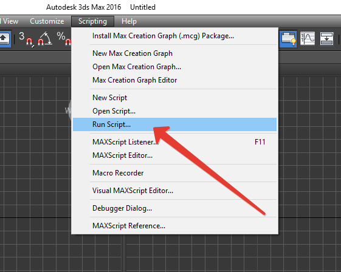

With {{name}} you can copy objects and paste them into the current scene or between open windows 3Ds Max.
Pasting objects will work even after the reopening 3Ds Max or restart the computer.
Copying can also occur between the different versions of 3Ds Max.
For example, you can copy objects from 3Ds Max version 2016 in to 2013 or vice versa.
Pasting objects will work even after the reopening 3Ds Max or restart the computer.
Copying can also occur between the different versions of 3Ds Max.
For example, you can copy objects from 3Ds Max version 2016 in to 2013 or vice versa.
Requirements:
3Ds Max 2011 and greater
Features:
- Easy and fast installation
- Copying objects between different windows 3Ds Max
- Copy between different versions of 3Ds Max *
- Notice of copying and pasting
- Settings
By donate the script, you will support the creator to continue the development and support this script itself. Donate
При помощи скрипта {{name}} можно копировать объекты и делать их вставку в текущую сцену или между открытыми окнами 3Ds Max.
Вставка объектов будет работать даже после переоткрытия 3Ds Max или перезагрузки компьютера.
Копирование так же может происходить между различными версиями 3Ds Max.
К примеру можно копировать объекты из 3Ds Max 2016 в версию 2013, или на оборот.
Вставка объектов будет работать даже после переоткрытия 3Ds Max или перезагрузки компьютера.
Копирование так же может происходить между различными версиями 3Ds Max.
К примеру можно копировать объекты из 3Ds Max 2016 в версию 2013, или на оборот.
Требования:
3Ds Max 2011 и выше
Возможности:
- Простая и быстрая установка
- Копирование объектов между разными окнами 3Ds Max
- Копирование между различными версиями 3Ds Max *
- Уведомление о копировании и вставке
- Настройки
Сделайте пожертвование для поддержки и продолжения разработки данного скрипта. Пожертвовать
В версии {{fullname}} используется универсальный установщик,
который позволяет автоматически копировать необходимые файлы,
а также добавлять необходимые пункты в контекстное меню (QuadMenu).
Или выполните его Scripting → Run Script.

Готово! {{name}} установлен!
Если у вас не создались данные пункты меню, прочитайте раздел FAQ.
который позволяет автоматически копировать необходимые файлы,
а также добавлять необходимые пункты в контекстное меню (QuadMenu).
Шаг 1
Запустите установщик, перетянув {{name}}.mzp в окно 3D Studio Max.Или выполните его Scripting → Run Script.

Шаг 2
После запуска установщика, вы увидите следующее окно.Готово! {{name}} установлен!
Шаг 3
Проверьте или у вас создались необходимые пункты в Quad Menu: CopyTo и PasteFrom.Если у вас не создались данные пункты меню, прочитайте раздел FAQ.
In the {{fullname}} used Universal Installer,
which allows you to automatically copy necessary files,
and add the buttons to the Tool Bar and QuadMenu.).
Or execute from Scripting → Run Script.
Done! {{name}} has been installed!
If menu items not created please read the FAQ section.
which allows you to automatically copy necessary files,
and add the buttons to the Tool Bar and QuadMenu.).
Step 1
Run the installer, just Drag&Drop {{name}}.mzp in to 3D Studio Max window.Or execute from Scripting → Run Script.
Step 2
After run the installer you can see the next window.Done! {{name}} has been installed!
Step 3
Check whether created the necessary items in the Quad Menu: CopyTo and PasteFrom.If menu items not created please read the FAQ section.
For remove the {{fullname}} you must do the following:
Step 1
Open menu Сustomize → Customize User Interface.Step 2
Open tab Quads.Step 3
Find the Copy To и Paste From items and delete them,
just press right mouse button and choose the Delete Menu Item.
Для удаления {{fullname}} вам необходимо выполнить следующие действия:
Найдите в активном списке меню пункты Copy To и Paste From и удалите их,
вызвав контекстное меню затем Delete Menu Item.
Шаг 1
Перейдите в меню Сustomize → Customize User Interface.Шаг 2
В открывшемся окне перейдите во вкладку Quads.Шаг 3
Найдите в активном списке меню пункты Copy To и Paste From и удалите их,
вызвав контекстное меню затем Delete Menu Item.
Шаг 1
Выберите объект или несколько объектов.Шаг 2
Нажмите правую кнопку мышки, затем нажмите CopyTo для копирования объектов.
Шаг 3
В этой же или новой сцене, или в другом окне 3Ds Max нажмите PasteFrom.
Объекты будут вставлены!
Step 1
Select an object or multiple objects.Step 2
Click the right mouse button, then press CopyTo for copy objects.
Step 3
In the same or a new scene, or in another window 3Ds Max press PasteFrom.
Objects are inserted!

Чтобы открыть меню настроек:
- Нажмите правую кнопку мышки для открытия Quad Menu
- Не закрывая Quad Menu, нажмите клавишу Shift
- Не отпуская клавиши Shift выберите пункт меню PasteFrom
Auto Rename Mtl Duplicates - Автоматически переименовывает дубликаты материалов.
По умолчанию эти опции отключены.
Важно!
Мы рекомендуем оставлять значения по умолчанию!
To open the settings menu:
- Click the right mouse button to open the Quad Menu
- Without closing the Quad Menu, press Shift
- Without releasing the key Shift select the PasteFrom
Auto Rename Mtl Duplicates - Automatically renames duplicate materials.
By default, these options are disabled.
Important!
We recommend that you use the default values!
Часто задаваемые вопросы:
Принцип работы скрипта?
При копировании скрипт сохраняет объекты во временный файл clipboard.max во временной папке. При вставке происходит merge объектов из clipboard.max. Таким образом вы можете делать вставку даже после перезапуска 3Ds Max или перезагрузки компьютера. clipboard.max сохраняется по умолчанию самой минимальной поддерживающейся версией текущего 3Ds Max, таким образом если произвести копирование из 2016 версии в 2012, объекты не вставятся. Но из 2012 версии вы сможете без проблем вставить в 2016.
Как открыть папку, где находится временный файл clipboard.max?
Нажмите правую кнопку мышки, нажмите клавишу Shift на клавиатуре, выберите пункт меню PasteFrom, в открывшемся окне нажмите "Open Temp Folder".
Можно ли копировать из 2011 версии в версию 2016?
Да.
При копировании 2016 версии в версию 2011 ничего не происходит?
3Ds Max может сохранять на 3 версии ниже. Соответственно из 2016 можно копировать только для 2013 - 2016 версий.
Не копирует объекты, даже в текущую версию?
Попробуйте установить скрипт заново, запустив сначала 3Ds Max от имени Администратора.
Frequently Asked Questions:
How scipt works?
When you copy the object script store it in clipboard.max file in the temporary folder. When you paste, merge objects from clipboard.max. So you can do the past, even after restarting the 3Ds Max or restart the computer. clipboard.max saved by default the lowest supported version of the current 3Ds Max, so if you copy objects from the 2016 version in to 2012, the objects are not pasted. But from the 2012 version, you can paste in to 2016 without any problems.
How to open the folder where the temporary file clipboard.max?
Click the right mouse button, press the Shift key on your keyboard, select PasteFrom menu item, press "Open Temp Folder" in the open window.
Can I copy from the 2011 version to the 2016 version?
Yes.
When copying from 2016 version to version 2011, nothing happens?
3Ds Max can save 3 versions below. Accordingly, from 2016, you can copy only for the 2013 - 2016 versions.
It does not copy objects, even in the current version?
Try to re-install the script by running the first 3Ds Max by Administrator.
{{name}}
Author: {{author}}
Version: {{ver}}
© {{year}} All rights reserved.
Universal Help by {{author}} v. {{helpver}}
Author: {{author}}
Version: {{ver}}
© {{year}} All rights reserved.
Universal Help by {{author}} v. {{helpver}}
By donate the script, you will support the creator to continue the development and support this script itself. Donate